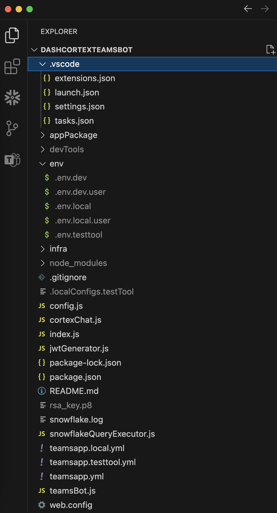
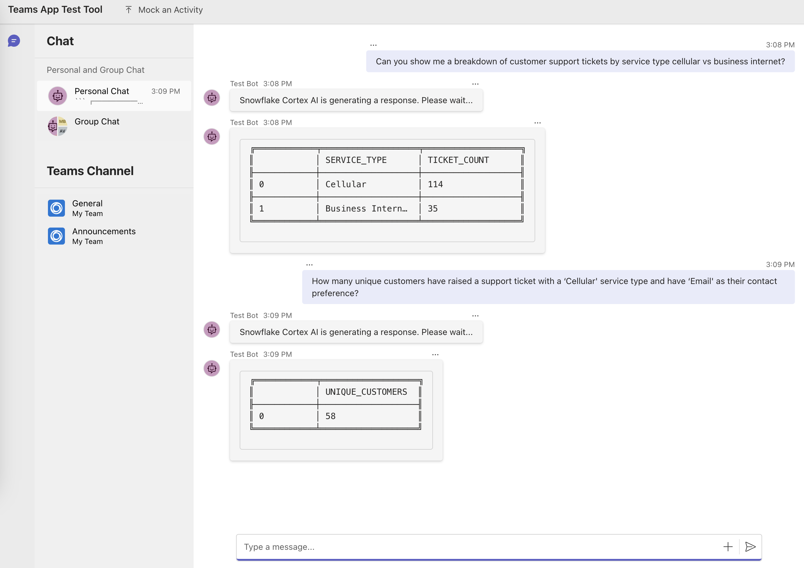

Cortex Agents simplify AI-powered data interactions via a REST API, combining hybrid search and accurate SQL generation. They streamline workflows by managing context retrieval, natural language to SQL conversion, and LLM orchestration. Response quality is enhanced with in-line citations, answer abstention, and multi-message context handling. Developers benefit from a single API call integration, real-time streamed responses, and reduced latency for optimized applications.
In this guide, we will see how to integrate the Cortex Agents (in Public Preview as of 01/12/2025) with Microsoft Teams.
Why Cortex Agents?
Business users have typically relied on BI dashboards and reports for data insights, but these tools often lack flexibility, requiring users to wait on busy data analysts for updates. Cortex Agents addresses this with a natural language interface allowing organizations to develop conversational applications. This enables business users to query data in natural language and get accurate answers in near real time.
Under the hood it is a stateless REST API that unifies Cortex Search's hybrid search and Cortex Analyst's SQL generation (with 90%+ accuracy). It streamlines complex workflows by handling context retrieval, converting natural language to SQL via semantic models, and managing LLM orchestration and prompts. Enhanced with in-line citations, answer abstention for irrelevant queries, and multi-message conversation context management, it offers single API call integration, real-time streamed responses, and reduced latency. Together, these capabilities allow you to search sales conversations, translate text into SQL for analytical queries, and blend structured and unstructured data for natural language interactions.
Learn more about Cortex Agents, Cortex Analyst, and Cortex Search.
Why Microsoft Teams?
Microsoft Teams is a communication and collaboration platform designed to streamline workplace interactions. It allows teams to organize conversations by channels, send direct messages, share files, and integrate with other tools for a seamless workflow. Microsoft Teams also supports the deployment of bots and apps, making it a hub for productivity, quick information sharing, and team alignment across projects.
Prerequisites
- A Snowflake account in one of these regions and also where PARSE_DOCUMENT is available. If you do not have one you can register for a free trial account.
- Node.js – Supported versions: 18, 20
- Teams Toolkit Visual Studio Code Extension version 5.0.0 and higher or Teams Toolkit CLI. For local debugging using Teams Toolkit CLI, complete extra steps described in Set up your Teams Toolkit CLI for local debugging.
What You Will Learn
- How to setup Cortex Analyst
- How to setup Cortext Search
- How to use Cortex Agents REST API and integrate it with Microsoft Teams
What You Will Build
A conversationl interface using Cortex Agents REST API integrated with Microsoft Teams
Step 1: Clone the GitHub repo.
Step 2: In Snowsight, create a SQL Worksheet and open setup.sql to execute all statements in order from top to bottom. This is to to create a database, schema, and tables SUPPORT_TICKETS and SUPPLY_CHAIN with data loaded from AWS S3 for both tables. And also to create Snowflake managed internal stages for storing the semantic model specification files and PDF documents.
Step 3: Use Snowsight to upload the support tickets semantic model spec file and the supply chain semantic model spec file to the DASH_SEMANTIC_MODELS stage.
Step 4: Use Snowsight to upload six PDF documents to the DASH_PDFS stage.
Step 5: In Snowsight, create a SQL Worksheet and open cortex_search_service.sql to execute all statements in order from top to bottom. This is to create a Cortex Search service for getting insights from the PDF documents. NOTE: PARSE_DOCUMENT is in Public Preview as of 01/12/2025.
Step 6: Configure key-pair authentication and assign the public key to your user in Snowflake and store/save/copy the private key file (.p8) in your cloned app folder.
Create Basic Bot
Step 1. Select the Teams Toolkit extension icon on the left in the VS Code toolbar.
Step 2. Click on Create a New App
Step 3. Select Bot from the dropdown menu and then select Basic Bot
Step 4. Select JavaScript as the language
Step 5. Select location and give your application a name. For example, CortexBot
At this point, you should have a folder structure similar to the one shown below.

Test Basic Bot
Click on Run > Start Debugging which launches your app in Teams App Test Tool in a web browser.
If all goes well, you will see an application that you can interact with in Teams App Test Tool as shown below. You will receive a welcome message from the bot, and you can send anything to the bot to get an echoed response.

Update Soucre Code Files
Step 1: Download package.json and overwrite/copy-paste the contents in your package.json.
Step 2: Download index.js and overwrite/copy-paste the contents in your index.js.
Step 3: Download teamsBot.js and overwrite/copy-paste the contents in your teamsBot.js.
Step 4: Download new cortexChat.js and copy the file in the same folder.
Step 5: Download new snowflakeQueryExecutor.js and copy the file in the same folder.
Step 6: Download new jwtGenerator.js and copy the file in the same folder.
Step 7: Set the following variables in existing env/.env.dev file:
DEMO_DATABASE='DASH_DB'
DEMO_SCHEMA='DASH_SCHEMA'
WAREHOUSE='DASH_S'
DEMO_USER='<your-user-name>'
DEMO_USER_ROLE='<your-user-role>'
SUPPORT_SEMANTIC_MODEL='@DASH_DB.DASH_SCHEMA.DASH_SEMANTIC_MODELS/support_tickets_semantic_model.yaml'
SUPPLY_CHAIN_SEMANTIC_MODEL='@DASH_DB.DASH_SCHEMA.DASH_SEMANTIC_MODELS/supply_chain_semantic_model.yaml'
SEARCH_SERVICE='DASH_DB.DASH_SCHEMA.vehicles_info'
ACCOUNT='<your-account-identifier>'
HOST='<your-account-identifier>.snowflakecomputing.com'
AGENT_ENDPOINT='https://<your-org>-<your-account>.snowflakecomputing.com/api/v2/cortex/agent:run'
# You may NOT edit below values
RSA_PRIVATE_KEY_PATH='rsa_key.p8'
MODEL = 'claude-3-5-sonnet'
At this point, you should have an updated folder structure similar to the one shown below.

Before proceeding, make sure you test that the Cortex Agents API endpoint and other env variables in env/.env.dev have been set correctly.
Browse to the cloned folder in VS Code and run node test.js in a terminal window.
If you see the output as shown below, then you're good to go.
✅ Cortex Agents response:
event: message.delta
data: {"id":"msg_001","object":"message.delta","delta":{"content":[{"index":0,"type":"tool_use","tool_use":{"tool_use_id":"tooluse_f48f1f25f2744a2c9bc30b","name":"supply_chain","input":{"query":"Can you show me a breakdown of customer support tickets by service type cellular vs business internet?","model":"snowflake-hosted-semantic","experimental":""}}},{"index":0,"type":"tool_results","tool_results":{"tool_use_id":"tooluse_f48f1f25f2744a2c9bc30b","content":[{"type":"json","json":{"text":"This is our interpretation of your question:\n\nShow me the count of support tickets broken down by service type, specifically for Cellular and Business Internet services","sql":"WITH __support_tickets AS (\n SELECT\n ticket_id,\n service_type\n FROM dash_db_swt_2024.data.support_tickets\n)\nSELECT\n service_type,\n COUNT(DISTINCT ticket_id) AS ticket_count\nFROM __support_tickets\nWHERE\n service_type IN (\u0027Cellular\u0027, \u0027Business Internet\u0027)\nGROUP BY\n service_type\n -- Generated by Cortex Analyst\n;","verified_query_used":false}}],"status":"success","name":"supply_chain"}}]}}
event: done
data: [DONE]
If you see any errors, please double check all values set in env/.env.dev. Common errors are related to ACCOUNT, AGENT_ENDPOINT and how the RSA key-pair is generated.
If you get this error Caused by SSLError(SSLCertVerificationError(1, "[SSL: CERTIFICATE_VERIFY_FAILED] certificate verify failed: Hostname mismatch, certificate is not valid..., then try adding locator.region to your-account-identifier. For additional instructions and help, refer to the documentation.
In VS Code, click on Run > Start Debugging which launches your app in Teams App Test Tool in a web browser. If all goes well, you will see an application that you can interact with in Teams App Test Tool.
Let's ask the following questions.
Cortex Analyst: Structured Data – Support Tickets
These questions are correctly routed via the support tickets semantic model.
Question: Can you show me a breakdown of customer support tickets by service type cellular vs business internet?
In a few moments, you should see the following response:

Now let's ask this question.
Question: How many unique customers have raised a support ticket with a ‘Cellular' service type and have ‘Email' as their contact preference?
In a few moments, you should see the following response:

Cortex Search: Unstructured Data
These questions are correctly routed to the vehicles info search service.
Question: What are the payment terms for Snowtires?
In a few moments, you should see the following response:

Now let's ask this question.
Question: What's the latest, most effective way to recycle rubber tires?
In a few moments, you should see the following response:

As you can see, now (business) users can directly get answers to their questions written in natural language using the Microsoft Teams app.
Cortex Analyst: Structured Data – Supply Chain
This question is correctly routed via the supply chain semantic model.
Question: What is the average shipping time for tires from Snowtires Automotive compared to average of our other suppliers?

Code Walkthrough
As you may have noticed, there are four main classes teamsBot.js, cortexChat.js, snowflakeQueryExecutor.js and jwtGenerator.js.
Here are some things you should make a note of in case you'd like to extend or modify the application.
class TeamsBot extends TeamsActivityHandler
This is the main handler that orchestrates the interaction between the user and the application. When user enters a prompt/message/question, it first creates and instance of CortexChat class, then calls _retrieveResponse method. Then, if the response includes a SQl, then it creates an instance of SnowflakeQueryExecutor class and calls runQuery method to execute the query and convert the results in a dataframe that can be displayed to the user. In other cases, the response is displayed to the user which may also include citations.
class CortexChat
An instance of this class is constructed using parameters jwtGenerator, agentUrl, model, searchService, semanticModels and it has method _retrieveResponse() that calls the Cortex Agents REST API – which inturn calls other class methods to parse the response.
async _retrieveResponse(query, limit = 1) {
const headers = {
'X-Snowflake-Authorization-Token-Type': 'KEYPAIR_JWT',
'Content-Type': 'application/json',
'Accept': 'application/json',
'Authorization': `Bearer ${this.jwt}`
};
const data = {
model: this.model,
messages: [{ role: "user", content: [{ type: "text", text: query }] }],
tools: [
{ tool_spec: { type: "cortex_search", name: "vehicles_info_search" } },
{ tool_spec: { type: "cortex_analyst_text_to_sql", name: "support" } },
{ tool_spec: { type: "cortex_analyst_text_to_sql", name: "supply_chain" } }
],
tool_resources: {
vehicles_info_search: {
name: this.searchService,
max_results: limit,
title_column: "title",
id_column: "relative_path"
},
support: { semantic_model_file: this.semanticModels[0] },
supply_chain: { semantic_model_file: this.semanticModels[1] }
}
};
try {
const response = await fetch(this.agentUrl, { method: "POST", headers, body: JSON.stringify(data) });
if (!response.ok) throw new Error(`Response status: ${response.status}`);
return await this._parseResponse(response);
} catch (error) {
console.error("Error fetching response:", error);
return { text: "An error occurred." };
}
}
class JWTGenerator
This class is responsible for generating a Java Web Token (JWT) for authenticating Cortex Agents REST API calls.
class SnowflakeQueryExecutor
The response from Cortex Agents REST API can include SQL query for questions served by Cortex Analyst. This class is responsible for executing that SQL on the client and returning the response as a dataframe.
As next steps, follow these links to extend the Bot's functionality.
- Publish the app to your organization or the Microsoft Teams app store
- Add or manage the environment
- Create multi-capability app
- Add single sign on to your app
- Customize the Teams app manifest
- Host your app in Azure by provisioning cloud resources and deploying the code to cloud
- Set up the CI/CD pipeline
- Develop with Teams Toolkit CLI
- Preview the app on mobile clients
Congratulations! You've sucessfully integrated Cortex Agents with Microsoft Teams. I hope you found this guide both educational and inspiring.
What You Learned
- How to setup Cortex Analyst
- How to setup Cortext Search
- How to use Cortex Agents REST API and integrate it with Microsoft Teams